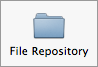

- Select File > Add Repository… (or click the
 button located in the top right-hand corner of the repository source list.)
button located in the top right-hand corner of the repository source list.) -
Select the File Repository button at the top of the displayed sheet:

- Click on the switch button labelled Create a New Repository. The sheet will expand to reveal repository creation options.
- Use the popup button labelled Where to select the folder in which the new repository should be created.
- Use the Nickname field to specify the name used to identify the new repository in the source list. This does not have to be same as the name of the repository folder.
- Enter the name of the repository's folder in the field labelled Create as. The repository will be created in a new folder with this name in the folder specified in the Where field.
- Use the Compatibility popup menu to specify the Subversion version with which the repository should be compatible.
- Click the Add button to create the repository.